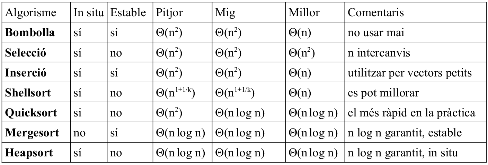
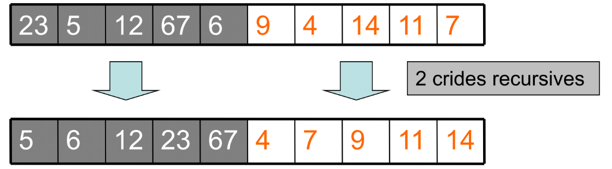
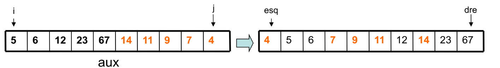
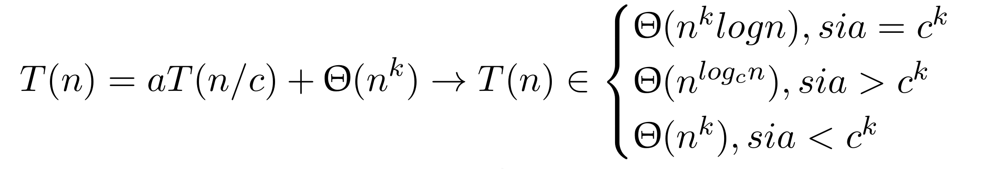
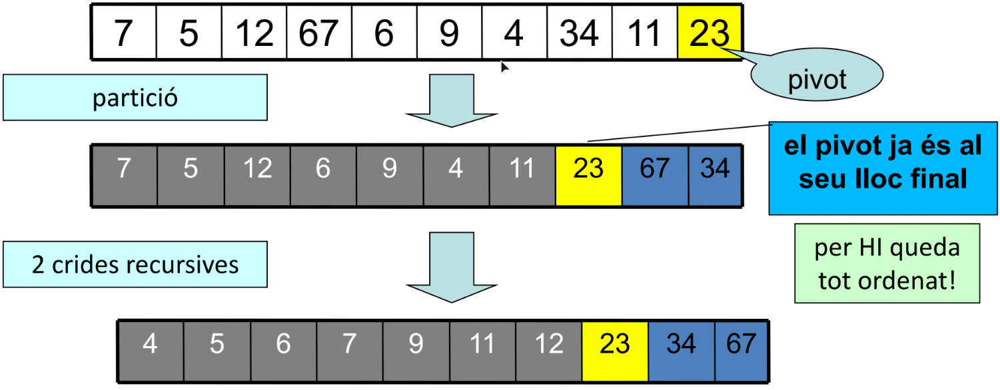
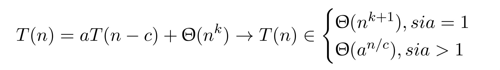

8.4 ALGORISMES D'ORDENACIÓ RECURSIUS
- Mergesort:
- no és in situ, però és estable
- requereix d'un procés iteratiu (fusió; algorisme mixt)
- Θ(n log n)
- Quicksort:
- és in situ, però no és estable
- requereix d'un procés iteratiu (partició; algorisme mixt)
- millor algorisme d'ordenació, Θ(n log n) en el cas mig, tot i ser Θ(n2)

Mergesort

Però encara falta un post-proc;es en el que s'ha de fer una fusió de les 2 meitats; fa falta una taula auxiliar.

Codi del Mergesort:
void merge_sort(Vector_enter a, unsigned n) {
// Pre: 0<n<=MAX i a=A
// Post: a[0..n-1] conté una permutació ordenada dels valors de A[0..n-1]
i_merge_sort(a,n,0,n-1);
}
void i_merge_sort(Vector_enter a, unsigned n, int esq, int dre) {
// Pre: 0<=esq<=dre<n<=MAX i a=A
// Post: a[esq..dre] conté una permutació ordenada dels valors de A[esq..dre]
int mig;
if(esq<dre){
mig=(esq+dre)/2;
i_merge_sort(a,n,esq,mig);
i_merge_sort(a,n,mig+1,dre);
fusio(a,n,esq,mig+1,dre);
}
}
void fusio(Vector_enter a, unsigned n, int esq, int ini2, int dre){
// Pre: 0<=esq<ini2<=dre<n<=MAX i a ordenat creixentment de esq a ini2-1 i de ini2 fins dret i a=A
// Post: a[esq..dre] conté una permutació ordenada dels valors de A[esq..dre]
Vector_enter aux; // cal taula auxiliar (dret-esq+1 posicions)
int n_elem = dre-esq+1; int i_aux=0; // indexació d’aux
for (int k=esq; k<ini2; k++) {
aux[i_aux]=a[k]; i_aux++;
}
for (int k=dre; k>=ini2; k--) { // a l’inrevès
aux[i_aux]=a[k]; i_aux++;
}
int i = 0; int j = n_elem-1; int k = esq;
while (i<= j) { // recorrem la taula auxiliar, cal tractar i..j
if (aux[i] <= aux[j]) { // volem estable, per tant <=
a[k]=aux[i]; i++;
}
else {
a[k]=aux[j]; j--;
}
k++;
}
}Càlcul de l'eficiència:
Fòrmula: 
Quicksort

Codi del Quicksort:
void intercanvi(int& x, int& y) {
int aux=x;
x=y;
y=aux;
}
void particio(Vector_enter a, unsigned n, int esq, int dre, int & pos_pivot) {
// Pre: 0<=esq<=dre<n<=MAX i a=A
// Post: d’esq a pos_pivot-1, tots són <a[pos_pivot], de pos_pivot+1 a dre, tots són >=a[pos_pivot], esq<=pos_pivot<=dre
// i a[esq..dre] és una permutació de A[esq..dre]
int pivot= a[dre];
pos_pivot= esq;
for (int i=esq; i<=dre-1; i++) {
// esq.. posPivot-1 són < pivot, de posPivot a i-1
// tots són >=pivot, de i fins dret-1 no explorats
if (a[i] < pivot) {
intercanvi(a[i],a[pos_pivot]);
pos_pivot++;
}
}
intercanvi(a[dre],a[pos_pivot]);
}
void i_quick_sort(Vector_enter a, unsigned n, int esq, int dre) {
//Pre: 0<=esq<=dre+1<=n<=MAX i a=A
//Post: a[esq..dre] conté una permutació ordenada dels valors de A[esq..dre]
int k;
if (esq<dre) {
particio(a,n,esq,dre,k);
// esq..k-1 tots < que t[k] (pivot)
// k+1..dre tots >= que t[k]
// l’element de la posició k ja no caldrà tocar-lo
i_quick_sort(a,n,esq,k-1);
i_quick_sort(a,n,k+1,dre);
}
}
void quick_sort(Vector_enter a, unsigned n) {
//Pre: 0<n<=MAX i a=A
//Post: a[0..n-1] conté una permutació ordenada dels valors de A[0..n-1]
i_quick_sort(a,n,0,n-1);
} Càlcul de l'eficiència en el casos òptim
Fòrmula: El cas òptim sería aquell en què sempre es dividís per la meitat:
Càlcul de l'eficiència en el casos pitjor
Fòrmula:  El cas pitjor seria aquell en què a totes les particions una de les parts sigui buida: